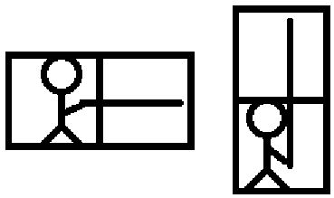
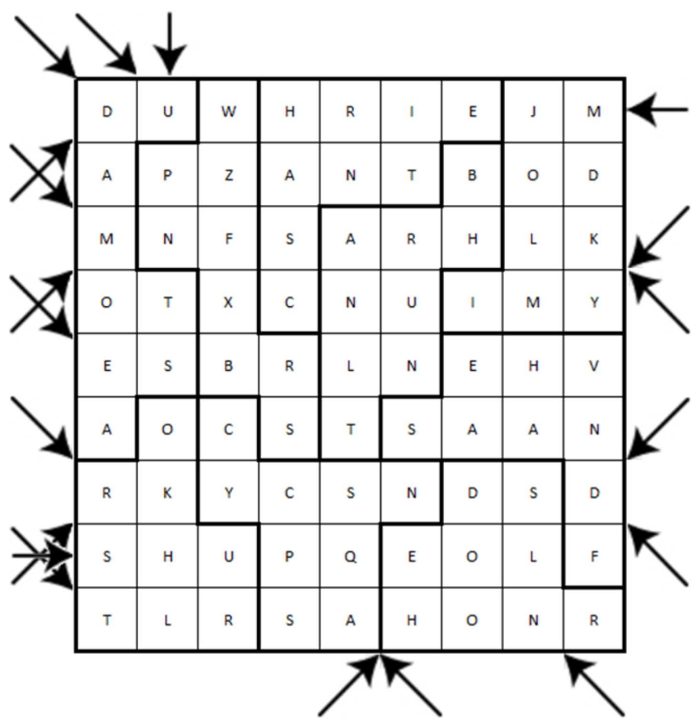

On the desert planet of Geonosis, a heated star battle is taking place between a group of Jedi and the droid army from Count Dooku surrounding them.
RULES
- Exactly two Jedi are in each row/column/bold region.
- Jedi have incredible powers. No two Jedi are in orthogonally or diagonally adjacent squares.
- Arrows represent incoming lasers fired by droids.
- These lasers travel in straight lines and must not be allowed to hit any of the Jedi.
- To protect themselves and to destroy the droids, the Jedi use lightsabers that can reflect the lasers.
- Each lightsaber extends vertically or horizontally from a Jedi into an orthogonally adjacent square. (See examples below.) Lightsabers cannot occupy the same square.
- Lightsabers reflect lasers like double-sided mirrors. A laser travelling diagonally into a square with a lightsaber will reflect off the lightsaber to exit from the adjacent corner of the square.
- All diagonally fired lasers will be reflected at least once to eventually exit the grid at the entry point (but opposite direction) of another arrow/laser, hittng the other firing droid.
- All orthogonally fired lasers are aimed directly at a Jedi, and will be reflected straight back in the opposite direction by that Jedi’s lightsaber (which is pointing directly at the firing droid).
- All Jedi are critical to the battle. Each lightsaber must reflect at least one laser.

